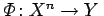
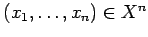
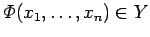
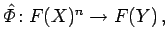
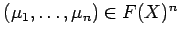
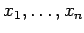
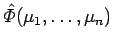
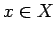

Inhalt Index DeskTop Bronstein

 Algebra und Diskrete Mathematik Fuzzy-Logik Verknüpfungen unscharfer Mengen
Algebra und Diskrete Mathematik Fuzzy-Logik Verknüpfungen unscharfer Mengen


In den vorangegangenen Abschnitten wurden Möglichkeiten der Verallgemeinerung mengentheoretischer Grundoperationen gewöhnlicher Mengen auf unscharfe Mengen diskutiert. Beim Erweiterungsprinzip geht es um die Abbildung einer unscharfen Definitionsmenge. Grundlage bildet das Konzept des Akzeptanzgrades vager Aussagen.
In Analogie zur Abbildungsvorschrift der Funktion , die einem Punkt  den scharfen Funktionswert  zuordnet, läßt sich diese Zuordnung auf unscharfe Mengen übertragen. Die Abbildungsvorschrift ist  wobei die unscharfen Zugehörigkeitsfunktionen  bezüglich  dem unscharfen Funktionswert  zugeordnet werden.
Hinweis: In Analogie zur Summen- und Produktbildung existieren für alle  entsprechende Erweiterungen für die Vereinigungsbildung und die Durchschnittsbildung.